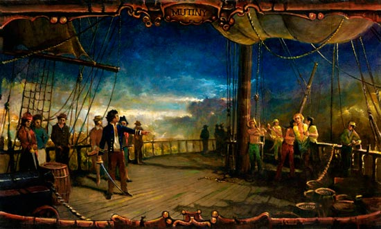
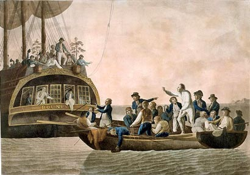
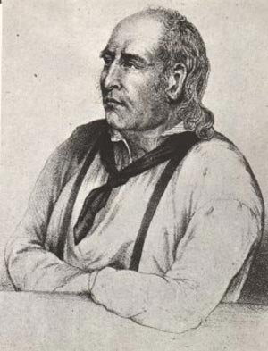
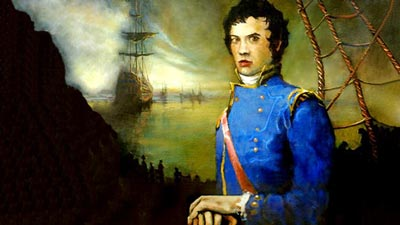
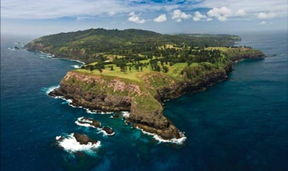

- History
-
Today's Pitcairn Island population is descended from British sailors and Tahitians. The mutineers of the HMS Bounty settled the island [first discovered by world explorers on 2 July 1767 by midshipman Pitcairn aboard the HMS Swallow] in 1790, along with their Tahitian women and a few Tahitian men.
Fletcher Christian and his band of mutineers seized the Bounty from Captain William Bligh on 28 April 1789 following a voyage filled with disrespect and frequent, sometimes severe, punishments from Bligh toward his crew.
Breadfruit tree- The Bounty set sail from Spithead in Portsmouth, England on 23 December 1787 on a mission to gather breadfruit trees from Polynesia and transport them to the British West Indies. The intent was to provide a new food source for the workers on sugar plantations there. After ten months and 27 thousand miles of sailing, the Bounty arrived in Mataivai Bay, Tahiti (where it remained until 4 April 1789); here the crew spent several months cultivating young breadfruit trees and prepared them for transport to their new destination.
- During their long stay in Tahiti, many of the men became involved with local women and some married. When it was time to leave this island paradise, they had a difficult time parting – this undoubtedly contributed to the motivation toward the soon coming mutiny.
- 
Painting of the mutinyFollowing the mutiny, Captain Bligh and eighteen loyal crew members were set adrift in a longboat and eventually arrived in Indonesia after an incredible open boat voyage of several thousand miles.
Fletcher and his men returned to Tahiti for their women, and to discharge sixteen loyalists and mutineers who did not want to continue with him; then they circled the South Pacific for several months looking for a safe place to hide from the inevitable hunt to find and prosecute them.
- 
Captain Bligh and his crew set adrift
Arriving at PitcairnThey eventually chose Pitcairn Island and arrived on 15 January 1790; they realized it was originally charted incorrectly by about 200 miles, thus making them less likely to be found by future voyagers. Deciding to stay on the isolated island, the nine remaining mutineers, their women some nine other Polynesian men and women, unloaded and stripped the ship, then on 23 January set the Bounty afire so as to hide all evidence of their whereabouts ... hence, they quickly became, and remain, one of the world's most isolated communities.
After a period of four years, the community fell into turmoil. Fueled by homemade alcohol, disputes over women eventually resulted in the violent deaths of all but two of the men, John Adams and Edward Young .
- 
John AdamsSix years later Young died of asthma; Adams was left with eleven women and 23 children. Adams turned to the Bounty Bible, which led him to repentance and a new outlook on life. Using the Bible, he educated the children, built a school and organized the community into a Christian way of life.
In 1808 Pitcairn was re-discovered by the American ship Topaz. Reports of the find went largely ignored; then, on 17 September 1814 the island community was again accidentally 'discovered' by two British frigates. Surprised by their find and impressed by the character of the residents, they chose to leave this community, founded by mutineers, alone and allow Adams to remain with his people.
Adams died on 6 March 1829 at age 63, forty-two years after the Bounty set sail on its fateful voyage. A varied succession of leadership followed until an orderly government was established in 1893.
- 
Painting of Fletcher ChristianEarlier, the Bounty crew remaining in Tahiti was found by the HMS Pandora, which was sent out to find and bring the mutineers to trial in England. All were found – some were acquitted and some were hanged. The ultimate fate of Fletcher Christian was never documented; it is said he was seen in England in later years, but it is generally believed he was killed, along with his companions, during the bloody years of the community's history.
- The present civilization of Pitcairn descends from these nine mutineers and their Tahitian women. None of the Tahitian men fathered any children on Pitcairn. The Bounty settlers established their small community, which subsisted for more than forty years until a visiting captain, fearing for the inhabitants' well-being, relocated the population to Tahiti (1831), where they soon succumbed to diseases that were foreign to them, as well as homesickness. Substantially reduced in numbers and longing for the familiarity of Pitcairn, they returned to their beloved home, where the population rebounded and surpassed its previous number.
In little more than two decades, due to over population, the residents were once again relocated, this time to Norfolk Island (1856), in a move that was thought to improve their quality of life and ease of management.
As with the first relocation attempt, homesickness prevailed and, before too much time passed by, an intrepid group of determined Pitcairners made the decision to return to their beloved island, to be followed soon after by others who could not stay away. Pitcairn has remained constantly inhabited ever since.- 
Norfolk Island- Prior to its discovery by Carteret and the subsequent settlement by the Bounty mutineers, Pitcairn Island was known as 'Mata-ki-te-Rangi' or 'Heragi,' according to Mangarevan folklore. It is clear from existing artifacts that Pitcairn played an integral role in ancient Polynesian history of the southern-most part of the Tuamotu Archipelago. The island may have been an important source of stone tools for that region of the Pacific. Pitcairn was surely occupied by those peoples for a significant period of their history, as evidenced by ancient maraes and stone gods.
To this day, descendants of the Bounty mutineers still live on the island and the current population is around 56.